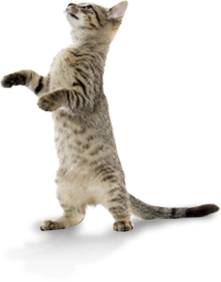
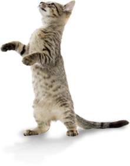

News February
It is good to see the better weather appearing and the cats certainly appreciate it.
We have had a quiet time over the winter but happily even some of our long tem residents have found new homes.
We held a Christmas Bazaar just before Christmas at Bentley village hall.
I would like to take this opportunity to thank all the volunteers who manned the many gift, games and produce stalls.
Thanks as well Mr Smith from our local shop for sponsoring us by paying for the hall hire.
A grand total of ?60 was raised ?which certainly helped towards the increase in vets bills that the winter usually bings.
Hour next fund raising event is an open Day?at the Centre on Saturday 16th March.
Entrance fee will be a donation of cat food!
We have printed posters advertising the event.
If you are able to display one in your window or elsewhere in the surrounding area,
please let me know and I will send you some.
 
